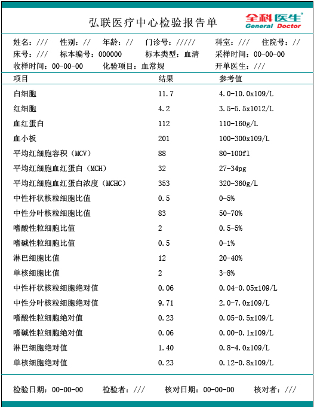
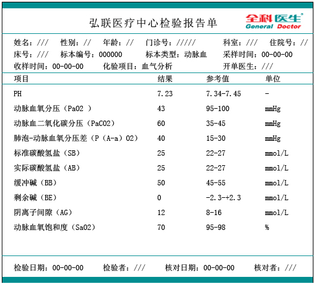
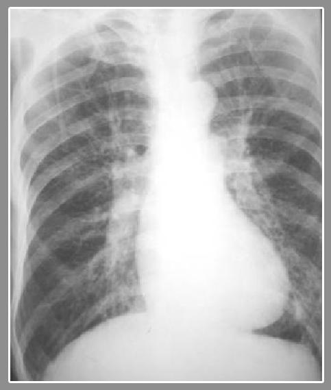
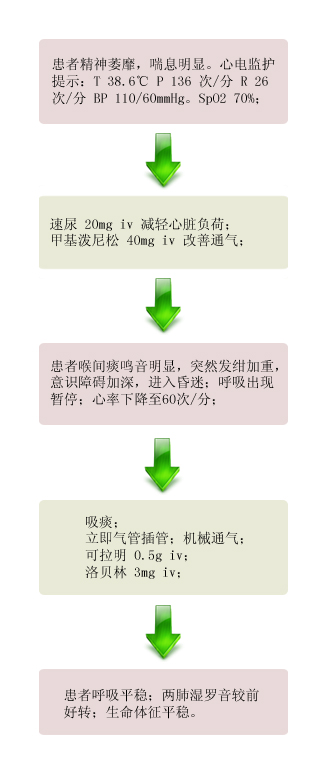

【病例摘要】
- 现病史：男，65岁，反复咳嗽、咳痰40余年，气促5年，加重伴发热7天。患者有慢性咳嗽，咳痰病史40余年，既往明确诊断“COPD”。近五年明显加剧，常年不断，伴喘息和呼吸困难，冬春季更甚。7天前因受凉而发热，咳嗽咳痰加重，咳大量黄色泡沫痰，气急，呼吸困难，发绀。
- 既往史：有吸烟史30余年。否认药物过敏史。
- 查体：T 38.6℃ P 136 次/分 R 26次/分 BP 110/60mmHg，精神萎靡，呼吸急促，两侧颈静脉充盈，桶胸，两肺呼吸音粗，两肺满布干、湿性罗音及哮鸣音，心率 136次/分，律齐，心音低钝，未及明显杂音。腹软，无压痛及反跳痛。

【辅助检查】
- 血常规:
 - 血气分析:
 - 胸片:

【诊断】
- 慢性喘息性支气管炎急性发作 阻塞性肺气肿 慢性肺源性心脏病 急性I型呼衰 失代偿性呼吸性酸中毒 肺性脑病
【事件】
